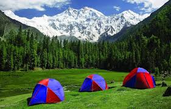
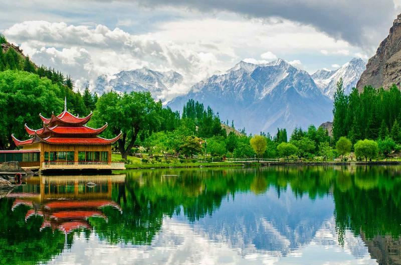

Traveler Experiences

My Trek to Fairy Meadows
Author: Hammad Tariq | Date: June 5, 2025
It started as a spontaneous decision, but hiking to Fairy Meadows turned out to be the most magical adventure of my life. The snow-covered peaks of Nanga Parbat towering over lush meadows took my breath away...
Read full story →
Exploring the Culture of Hunza
Author: Sana Amjad | Date: May 12, 2025
From warm smiles to ancient forts, Hunza is not just about mountains — it’s about people. I spent 5 days learning local traditions, tasting food like Chapshuro, and listening to stories from the elders...
Read full story →
Peace at Shangrila
Author: Usman Riaz | Date: April 27, 2025
Skardu’s serene lakes and quiet surroundings offered me something I hadn’t felt in years: peace. My stay at Shangrila Resort gave me the calm I was desperately craving...
Read full story →